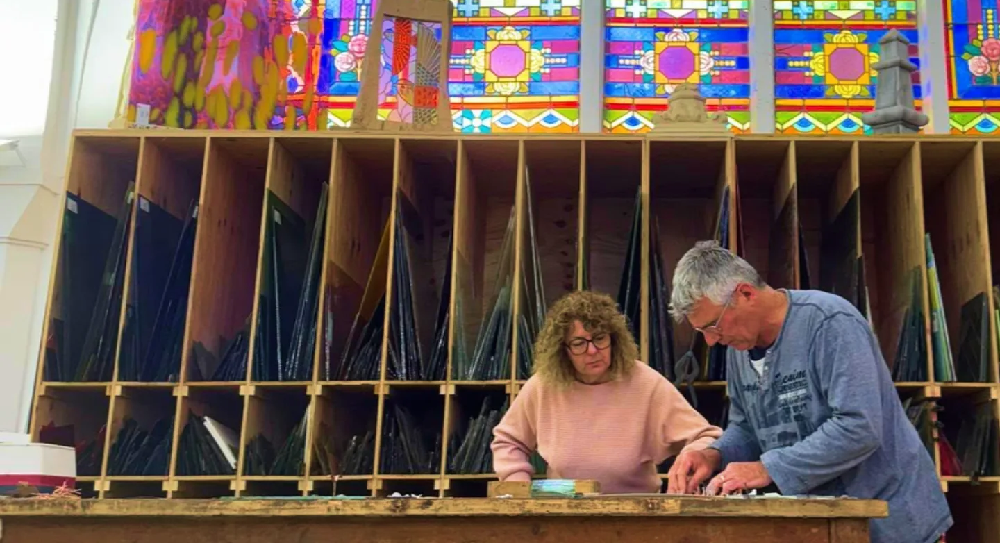

Vitraux Liryc
Cyril Deschamps, artisan vitrailliste.
Création et restauration de vitrail
dans l’ancienne chapelle de l’hôpital de Parthenay.
18 rue de la Citadelle, Parthenay
Savoir-faire
Mon Atelier
& Savoir-faire
De la sauvegarde des vitraux anciens aux créations contemporaines, chaque pièce est façonnée à la main, dans le respect des techniques traditionnelles.
Redonner vie à l’histoire
Confiez-nous la sauvegarde et la renaissance des vitraux anciens, dans le respect des techniques traditionnelles.
Restauration
Façonner la lumière,sur mesure
Donnez de la personnalité à votre espace avec une œuvre unique, pensée et réalisée pour votre intérieur.
Créations
Le charme d’hier,le confort d’aujourd’hui.
Modernisez et protégez vos vitraux (double vitrage, isolation) sans jamais perdre leur éclat d’origine.
Protection
Au cœur de l’atelier
Découvrez notre histoire, notre savoir-faire artisanal et la passion qui anime chaque morceau de verre.
À propos
Un vitrail à restaurer, une idée à créer ?
Parlez-nous de votre projet : un premier échange suffit pour imaginer la suite ensemble.